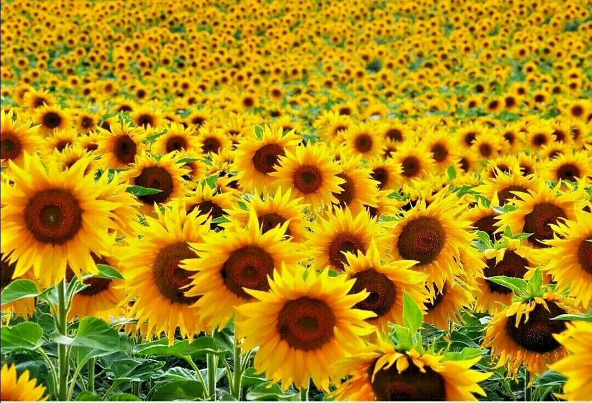

Flowergram
A flower is the reproductive part of flowering plants
Blue eyes
Chamomile

Sunflower
Tulip
Orchid
Peony
Rose
Plumeria
 A flower is the reproductive part of flowering plants
A flower is the reproductive part of flowering plants
A flower is the reproductive part of flowering plants
A flower is the reproductive part of flowering plants
A flower is the reproductive part of flowering plants
A flower is the reproductive part of flowering plants